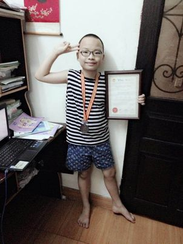
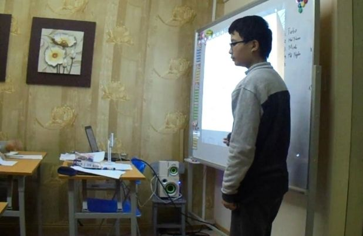
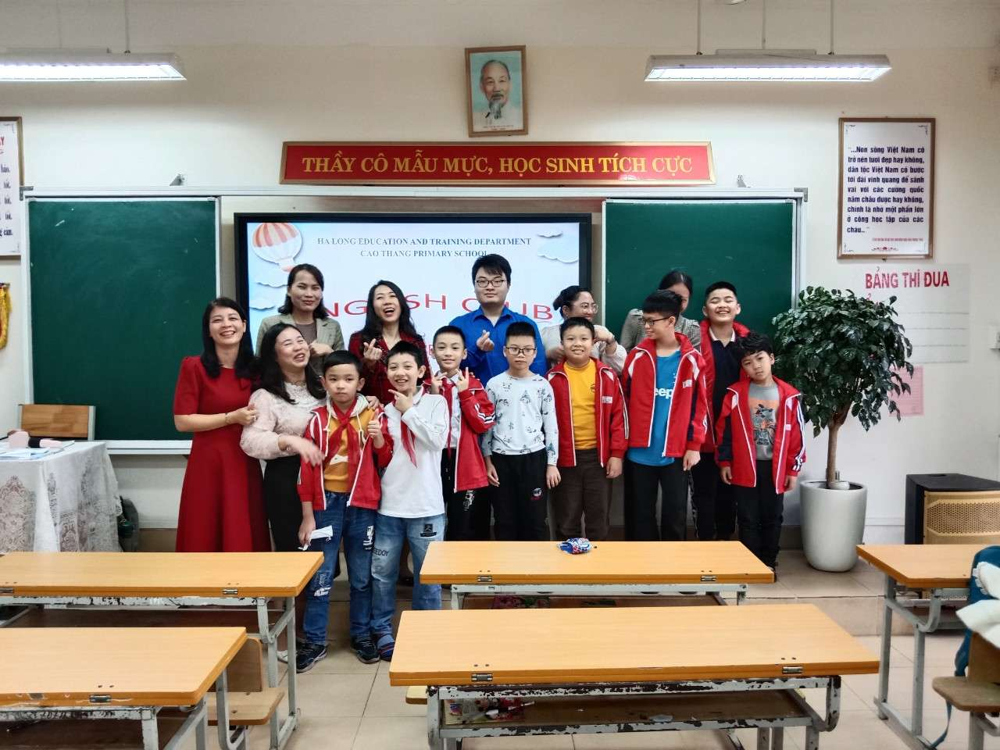
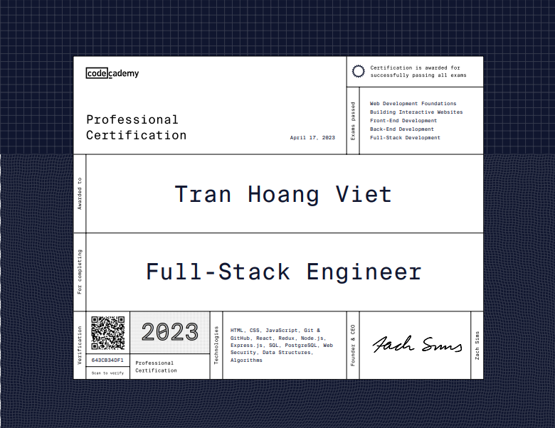
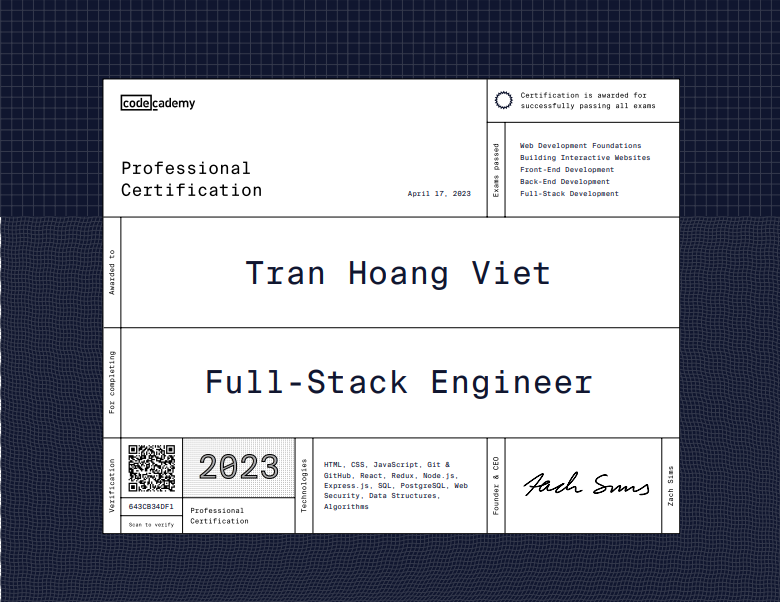
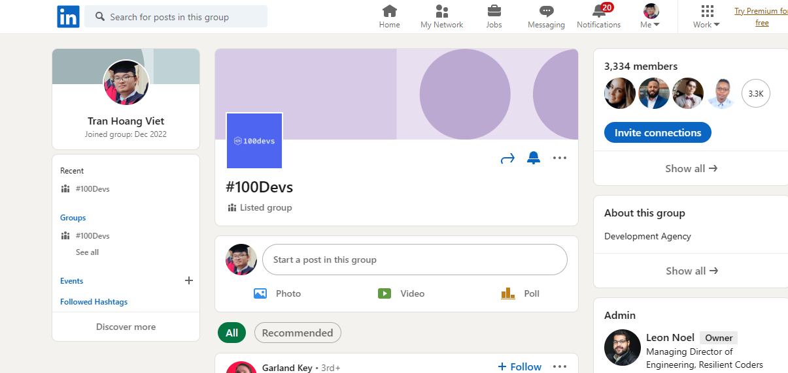
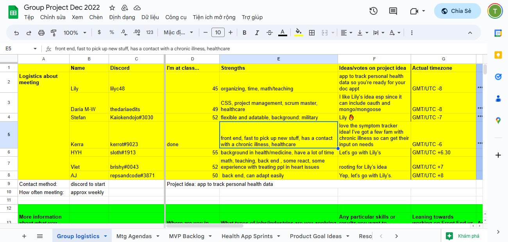
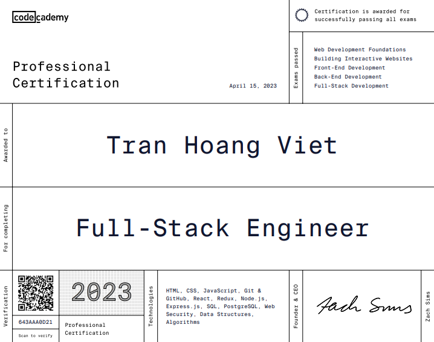

My Work
My portfolio (which I coded out by myself from scratch) showcases my exceptional academic results, leadership qualities, extracurricular activities and passion
for teaching English and software development.
>
-
All
-
Software Development
-
Teaching English
-
Other

My journey
5/2014
My journey with the English language began in 2007 when I took the initiative to learn the language independently. With
determination, curiosity, and a thirst for knowledge, I was able to develop a strong command of English.
In 2014, I decided to use my skills and passion to the test. At just nine years old, I found myself competing in the
International Olympiads of English (IOE) against participants who
were one to two years older than me. Despite the age gap, I managed to secure a bronze medal at a countrywide level, a feat that was not
without its share of struggles and challenges.
The IOE is a prestigious competition that brings together talented young students from around the nation to showcase
their English language skills. As a young participant, I faced numerous obstacles, including the pressure to perform
well, the difficulty of balancing my academics with my passion for the competition, and the challenge of overcoming
self-doubt.
One of the most significant struggles I encountered was the immense pressure to excel in the competition. With
participants being highly skilled and experienced, I often felt overwhelmed and intimidated. However, I channeled this
pressure into motivation, pushing myself to work harder and improve my English language skills. This determination
allowed me to overcome my fears and compete with confidence, against all odds
One of the best moments of my life, ever.

4/2017
This journey
not only helped me develop my linguistic skills but also gave me a profound appreciation for the power of language in
transforming lives.
In April 2017, I decided to use my skills and passion to make a difference in the lives of others. That's when I began
teaching English and coding for free as a part of charity activities at Everest English Center, an institution dedicated to providing high-quality English
education to empower individuals from underprivileged backgrounds.
As an young and talented instructor at Everest English Center, I have had the privilege of teaching English to children who otherwise may
not have had the opportunity to learn this valuable skill. My commitment to these students goes beyond just imparting
knowledge; it is about instilling a sense of pride and accomplishment in them, helping them unlock their full potential
and opening doors to new opportunities.
5/2018
By co-founding an English club at Cao Thanh Primary School in Ha Long in May 2018, I took a significant step forward on
my journey to have a lasting impact on society. Recognizing the significance of English proficiency in today's
globalized world and its role in providing greater opportunities for personal and professional development, I decided to
help young students in my community improve their language skills.
Together with a group of devoted volunteers, we developed an interactive curriculum that incorporated innovative
teaching techniques and enjoyable activities. This strategy allowed the students to gain confidence in their
English-speaking abilities while simultaneously developing essential teamwork and communication skills.
As a co-founder and leader of the club, I was responsible for coordinating meetings and managing resources, as well as
mentoring students and guiding our volunteer team. This experience not only honed my organizational and leadership
skills, but also strengthened my resolve to empower the youth in my community.


7/2019
My lifelong motivation has been a deep appreciation for the English language. In Math, I was lauded for both my
problem-solving and logical skills.
My success in mathematics, however, is a tribute to the value of diligence, focus,
and the drive to excel. After starting out in mathematics with only a handful of unremarkable results from online math
Olympiad competitions, I was given the incredible opportunity of attending
Hanoi University of Science's High School for
Gifted Students (HSGS). This is a significant accomplishment given the school's competitive acceptance rate of 6% and
its reputation for producing and nurturing talented Vietnamese students who excelled at natural sciences.
When I enrolled in the High School for
Gifted Students, I was presented with an advanced mathematics curriculum designed to push me to my limits. Surrounded by
peers who shared my interests, I flourished in a setting that fostered communication, exploration, and innovation.
My passion for the English language, combined with my love for mathematics, has fueled my lifelong motivation to excel
in both fields. With each new challenge, I found myself growing more determined and focused on my goals.
At the High School for Gifted Students, the advanced mathematics curriculum was both rigorous and demanding. Yet, it
provided me with the perfect environment to push my boundaries and explore the depths of my potential. In this
stimulating atmosphere, I was able to hone my problem-solving and logical skills, developing a strong foundation for
future academic and professional success.
The collaborative nature of the school encouraged me to engage in meaningful conversations with my peers, as we worked
together to solve complex mathematical problems. This experience not only taught me the importance of teamwork but also
allowed me to develop crucial leadership skills. As we navigated the challenging curriculum, we learned to rely on each
other's strengths and support one another through the highs and lows of our academic journey.
 

10/2020
I took the IELTS exam for the first time in October 2020 and received an overall score of 7.0. This achievement marked the start of a life-changing journey. As my knowledge grew, I began to offer IELTS preparation and coaching to others in need of assistance. My commitment to assisting others, combined with my enthusiasm for learning, enabled me to advance as a field leader.
My coaching method was largely concerned with delivering personalized, one-on-one assistance. This approach, I believed, developed a deeper grasp of the exam's complexities and success techniques. I was able to empower my students and unlock their full potential by personalizing each session to the individual. I gained vital lessons about tenacity, patience, and the necessity of continuous self-improvement while assisting others.
I opted to retake the IELTS exam in December 2022. This time, I received an overall score of 8.0, with a reading score of 9. This advancement demonstrated not only my progress as a learner, but also my capacity to adapt and enhance my teaching tactics. As a result, I am now able to deliver even more value to my students while maintaining my excellent leadership skills within the IELTS community.
My journey from a 7.0 to coaching and eventually an 8.0 has given me a tremendous appreciation for the power of learning and teaching. My experiences have transformed me into a more resilient and dedicated person, motivated by a desire to see others succeed. With this foundation, I am enthusiastic to continue developing as a leader and making a great difference in the lives of my kids.
  
3/2022
My journey with
#100devs began at the young age of 18, and it turned out to be a life-changing experience. The agency's focus on continuous learning and collaboration resonated with my own passion for self-improvement and dedication to my craft. Thanks to the program, I not only learned how to code, but also was able to gain valuable contract work , which not only bolstered my portfolio but also helped me hone my professional skills. I found myself surrounded by like-minded individuals, all striving to become better developers, which motivated me further to push my limits and grow as a developer.
In addition to my experience with #100devs, I also took the initiative to expand my knowledge in web development by earning certificates from various online platforms such as
Mimo,
Gymnasium,
freeCodeCamp ,
CodeCademy etc. These certifications showcased my proficiency and commitment to learning, allowing me to stand out among my peers. As I continued to immerse myself in web development, I discovered a deep-rooted passion for problem-solving, collaboration, and creating innovative solutions that would make a positive impact on the lives of others.
Throughout this journey, I have been constantly reminded of the importance of lifelong learning and the value of persistence. The support from the #100devs community and my personal drive to excel have played a significant role in shaping my career as a web developer. My experiences have taught me that with dedication and a willingness to learn, there are no limits to what one can achieve. As I continue to grow in this field, I look forward to embracing new challenges and opportunities, further solidifying my skills.


{kind=link}
{kind=link}
{kind=link}
{kind=link}
{kind=link}
{kind=link}
{kind=link}
{kind=link}
{kind=link}
{kind=link}
{kind=link}
{kind=link}
{kind=link}
{kind=link}
{kind=link}